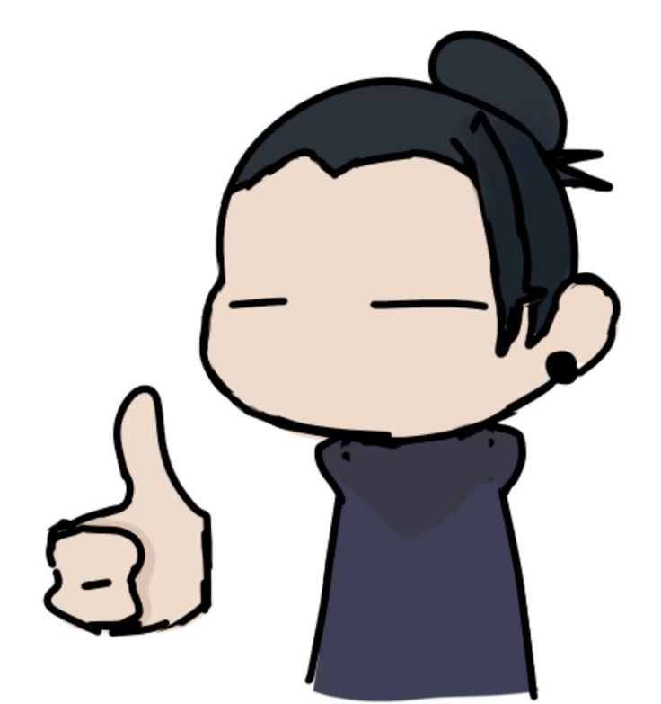
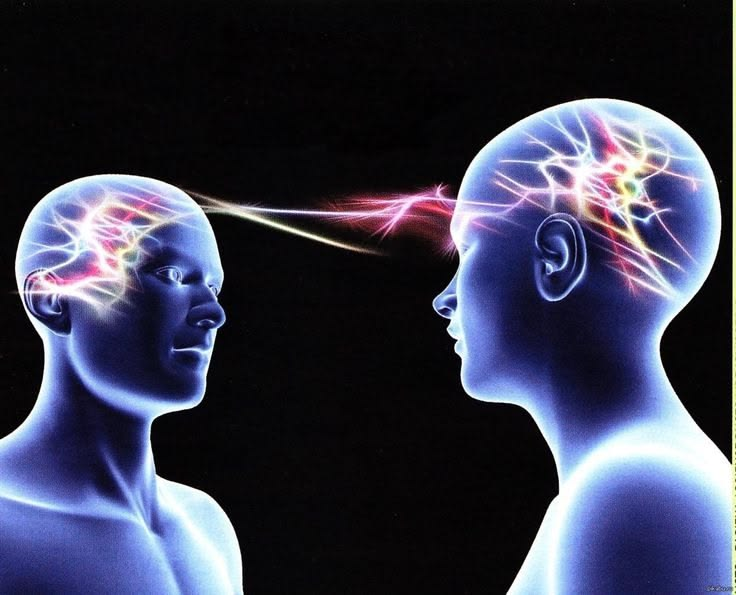
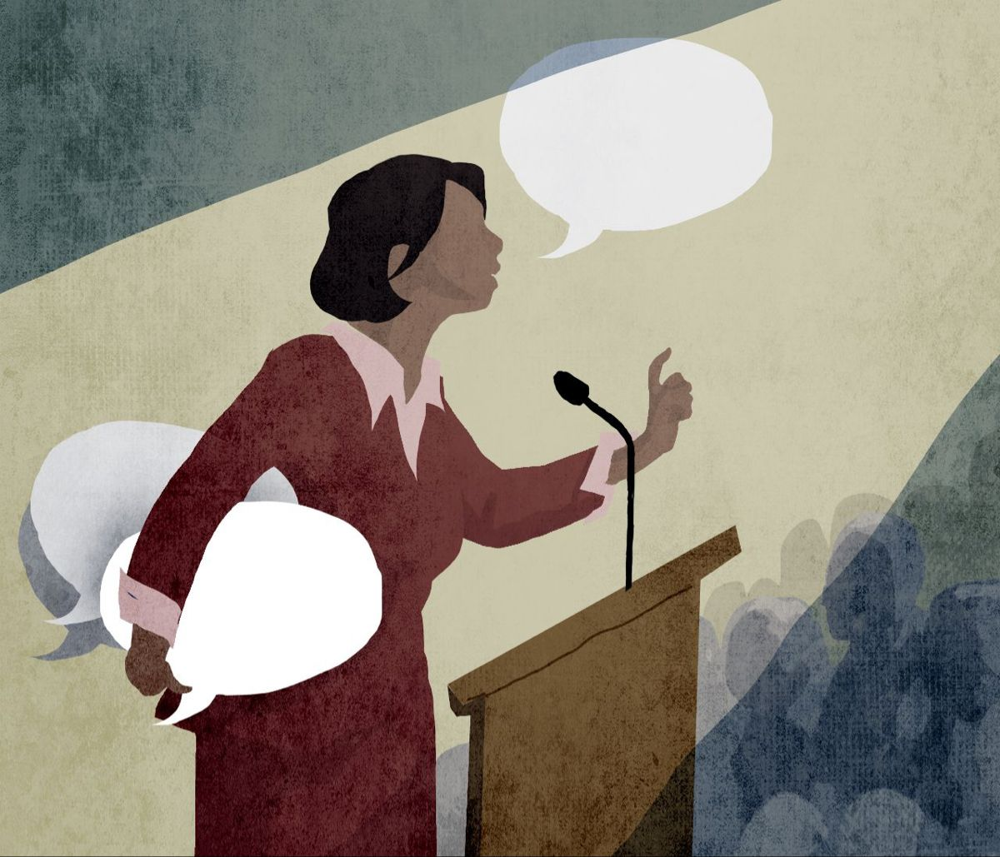
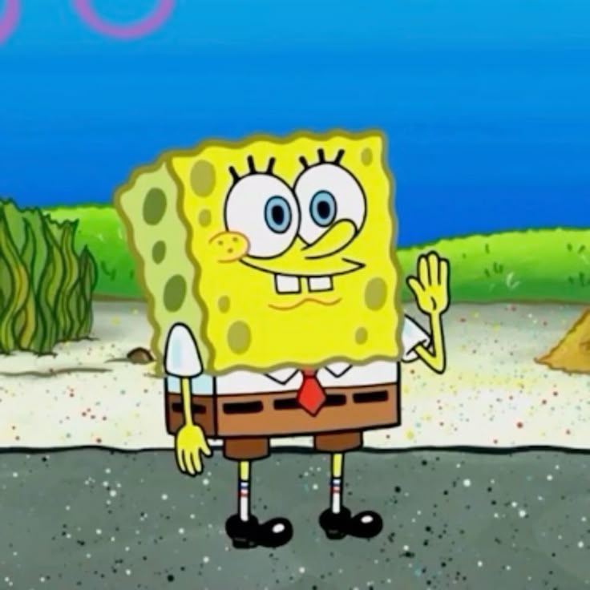
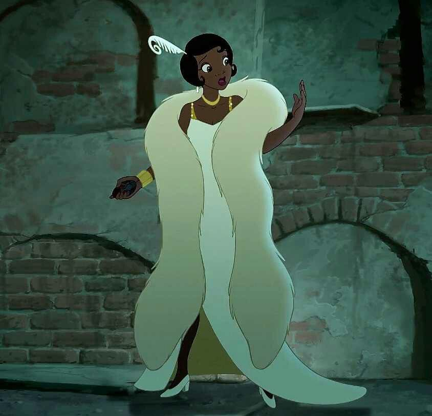

Gestualidad Simbólica
Emblemas
Gestos intencionados con una traducción verbal directa y equivalente a una palabra u oración compartida culturalmente.
Explora interactivamente los 9 canales fundamentales del comportamiento corporal y la expresión implícita.
Selecciona una categoría para inspeccionar el comportamiento en tiempo real.

KINESISEstudia el significado de los movimientos corporales, la postura, la inclinación del torso y el contacto visual durante la comunicación.
Pasa el cursor sobre cada tarjeta para revelar el análisis situacional.

Gestos intencionados con una traducción verbal directa y equivalente a una palabra u oración compartida culturalmente.

Movimientos espontáneos de manos y brazos que acompañan, dan ritmo y marcan énfasis al discurso hablado.
Normas sociales e institucionales que regulan el comportamiento, orden de precedencia y compostura formal.

Ritual de contacto táctil o visual que define desde el inicio la jerarquía, cordialidad o distancia entre interlocutores.

Código estético de indumentaria y accesorios que comunica estatus, pertenencia de grupo y proyección profesional.
Evalúa escenarios reales e identifica el concepto correspondiente.
Cargando escenario...